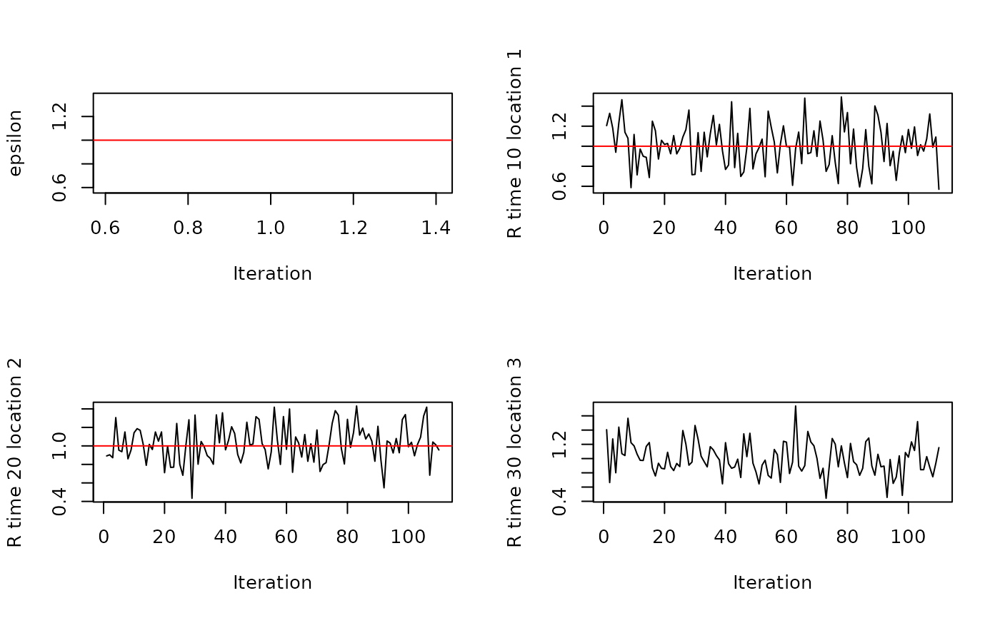

R/gibbs_draws.R
estimate_advantage.RdJointly estimate the instantaneous reproduction number for a reference pathogen/strain/variant and the relative transmissibility of a "new" pathogen/strain/variant
estimate_advantage(
incid,
si_distr,
priors = default_priors(),
mcmc_control = default_mcmc_controls(),
t_min = NULL,
t_max = nrow(incid),
seed = NULL,
incid_imported = NULL,
precompute = TRUE,
reorder_incid = TRUE
)a multidimensional array containing values of the incidence for each time step (1st dimension), location (2nd dimension) and pathogen/strain/variant (3rd dimension)
a matrix with two columns, each containing the probability mass function for the discrete serial interval for each of the two pathogen/strain/variants, starting with the probability mass function for day 0 in the first row, which should be 0. each column in the matrix should sum to 1
a list of prior parameters (shape and scale of a gamma distribution) for epsilon and R; can be obtained from the function `default_priors`. The prior for R is assumed to be the same for all time steps and all locations
a list of default MCMC control parameters, as obtained for example from function `default_mcmc_controls`
an integer > 1 giving the minimum time step to consider in the
estimation.
The NULL, t_min is calculated using the function compute_si_cutoff
which gets the maximum (across all variants) of the 95th percentile of the
SI distribution.
an integer >`t_min` and <=`nrow(incid)` giving the maximum time step to consider in the estimation. Default value is `nrow(incid)`.
a numeric value used to fix the random seed
an optional multidimensional array containing values of the incidence of imported cases for each time step (1st dimension), location (2nd dimension) and pathogen/strain/variant (3rd dimension). `incid - incid_imported` is therefore the incidence of locally infected cases. If `incid_imported` is NULL this means there are no known imported cases and all cases other than on those from the first time step will be considered locally infected.
a boolean (defaulting to TRUE) deciding whether to precompute quantities or not. Using TRUE will make the algorithm faster
a boolean (defaulting to TRUE) deciding whether the incidence array can be internally reordered during the estimation of the transmission advantage. If TRUE, the most transmissible pathogen/strain/variant is temporarily assigned to [,,1] of the incidence array. We recommend the default value of TRUE as we find this to stabilise inference.
A list with the following elements.
`epsilon` is a matrix containing the MCMC chain (thinned and after burnin) for the relative transmissibility of the "new" pathogen/strain/variant(s) compared to the reference pathogen/strain/variant. Each row in the matrix is a "new" pathogen/strain/variant and each column an iteration of the MCMC.
`R` is an array containing the MCMC chain (thinned and after burnin) for the reproduction number for the reference pathogen/strain/variant. The first dimension of the array is time, the second location, and the third iteration of the MCMC.
`convergence` is a logical vector based on the results of the Gelman-Rubin convergence diagnostic. Each element in `convergence` takes a value of TRUE when the MCMC for the corresponding epsilon has converged within the number of iterations specified and FALSE otherwise.
`diag` is a nested list of the point estimate and upper confidence limits of the Gelman-Rubin convergence diagnostics (as implemented in coda). The length of `diag` is equal to the number of rows in `epsilon`. Each element of `diag` is a list of length 2 where the first element is called `psrf` and is a named list of the point estimate and upper confidence limits. The second elemnent is NULL and can be ignored.
n_v <- 2
n_loc <- 3 # 3 locations
T <- 100 # 100 time steps
priors <- default_priors()
# constant incidence 10 per day everywhere
incid <- array(10, dim = c(T, n_loc, n_v))
# arbitrary serial interval, same for both variants
w_v <- c(0, 0.2, 0.5, 0.3)
si_distr <- cbind(w_v, w_v)
# Dummy initial values for the MCMC
R_init <- matrix(5, nrow = T, ncol = n_loc)
R_init[1, ] <- NA # no estimates of R on first time step
epsilon_init <- 5
x <- estimate_advantage(incid, si_distr, priors)
# Plotting to check outputs
par(mfrow = c(2, 2))
plot(x$epsilon, type = "l",
xlab = "Iteration", ylab = "epsilon")
# Compare with what we expect with constant incidence in all locations
abline(h = 1, col = "red")
plot(x$R[10, 1, ], type = "l",
xlab = "Iteration", ylab = "R time 10 location 1")
abline(h = 1, col = "red")
plot(x$R[20, 2, ], type = "l",
xlab = "Iteration", ylab = "R time 20 location 2")
abline(h = 1, col = "red")
plot(x$R[30, 3, ], type = "l",
xlab = "Iteration", ylab = "R time 30 location 3")
